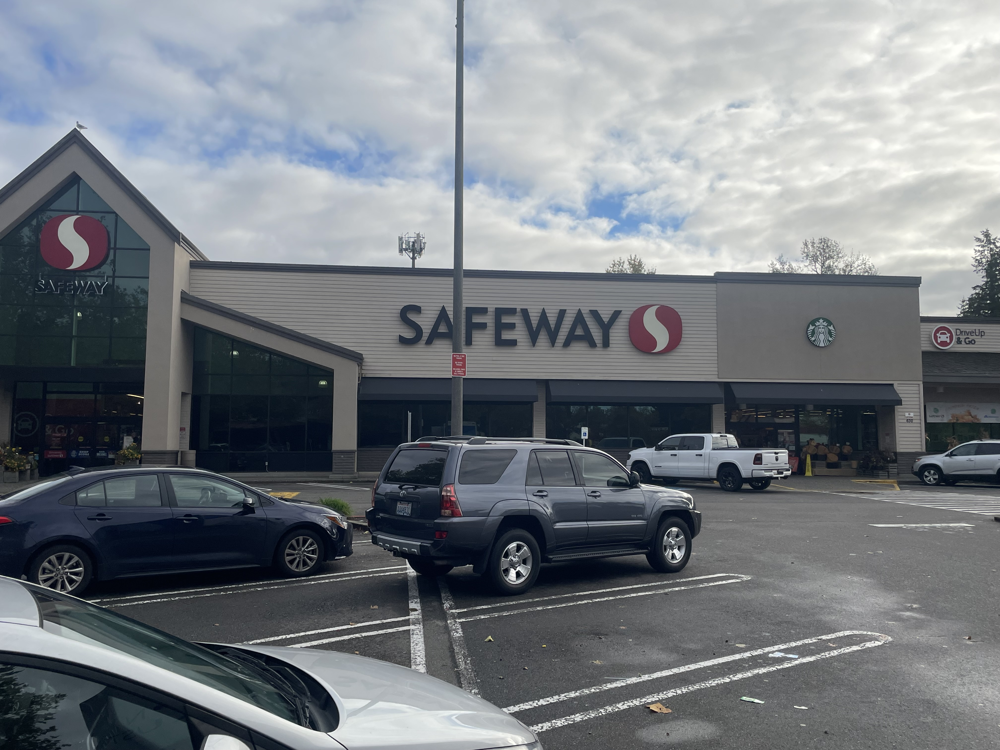
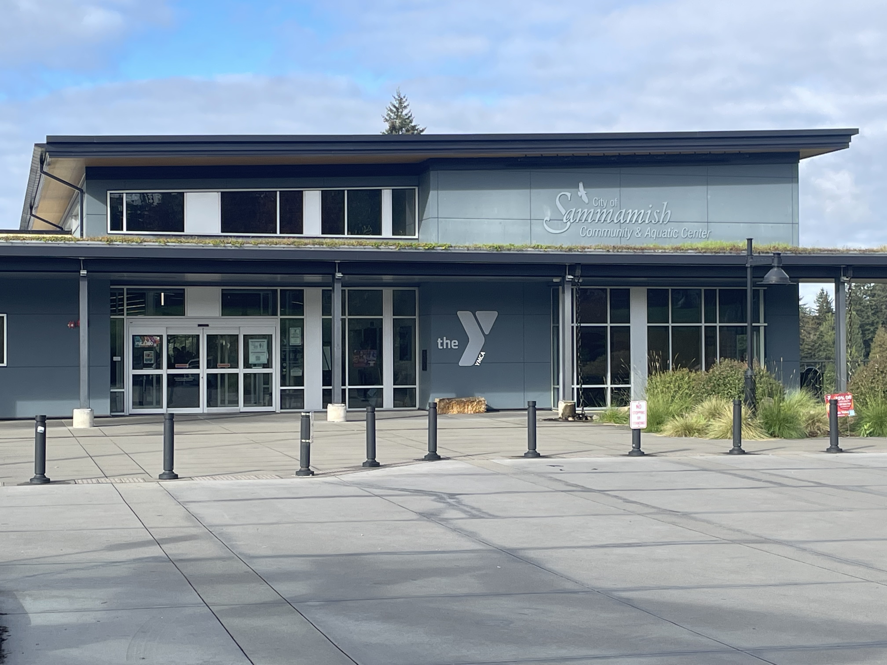

Welcome to Sammamish, Washington
About Sammamish
Sammamish is my Hometown ever since I was young. It's the center between the cities of Redmond and Issaquah. It may not be the biggest city, but what it has in it makes up for it. There is a lot of nature compared to other cities. The people here are generally pretty nice and understanding. There are multiple convient and intresting places here. The recommended attractions I would go are Safeway, McDonald's, Sammamish Cafe, and the YMCA.
Safeway

Front view of Safeway. Image created by Spencer Call. Date created: 10/22/2024.
Safeway is a large supermarket chain and multiple of them can be found in many places. It's the biggest and most popular grocery store in Sammamish. It has been in Sammamish for a long time, and people often went there the most than anywhere else. It has food and various other items for sale. It even has a in-store Starbucks inside for anyone who wants coffee. You could also get the Safeway app and free membership for better deals. My family and I go there most of time for groceries and to get snacks.
Website link: Safeway
McDonald's
 Front view of McDonald's. Image created by Spencer Call. Date created: 10/23/2024.
Front view of McDonald's. Image created by Spencer Call. Date created: 10/23/2024.
McDonald's is one of the largest fast-food restaurant chains in the world. It's not surpising there is one in Sammamish. It has been here for a long time. There have been other fast-food restaurants in Sammamish, and they evenuallty went out of business, but not McDonald's. A lot of people go there all the time. It's most cowarded during lunch hours and least busy during breakfast. I often bike there for lunch before it get's too crowded.
Website link: McDonald's
Sammamish Cafe
 Front of Sammamish Cafe. Image created by Spencer Call. Date created: 10/22/2024.
Front of Sammamish Cafe. Image created by Spencer Call. Date created: 10/22/2024.
Sammamish Cafe is another restaurant, but it's dine-in. It has been in Sammamish for a while. There are a few of these restaurants, but they are only found in other cities in Washington, and their names changed to whatever city they are in, like Issaquah or Woodinville Cafe. Many people like to dine in there for the fashion and food of the restaurant. There are many breakfast, lunch, and dinner options to choose from in the menu. There is a bar for anyone who would wants alcohol. There is an outdoor balcony if anyone would wants fresh air. You can also buy pies or other desserts at the counter. It's honestly one of my favoirte restaurants and I always love going there.
Website link: Sammamish Cafe
YMCA

Front entrance of the YMCA. Image created by Spencer Call. Date created: 10/22/2024.
The YMCA is a non-profit community made to help people thrive and get together around the country. There are various locations in Washington. The one in Sammamish is right behind City Hall and the public library. YMCA offers many things for the community. Workouts, children's daycare, swimming, and other activites. It's programs are mainly for young kids, teenagers, and families. A lot of people here come to exercise and learn. You can also find a schedule for different programs you might want to do. I have been here many times when I was younger to exercise and have fun. I also heard jobs there are good and pay well.
Website link: YMCA Sammamish
Other Facts about Sammamish
- Sammamish is known to be one of the safest cities in America. It's also one of the wealthiest cities in Washington state.
- There tends to be many cloudy and rainy days, even in the summer.
- Sammamish is part of King County.
- There are many different school with good education in Sammamish.